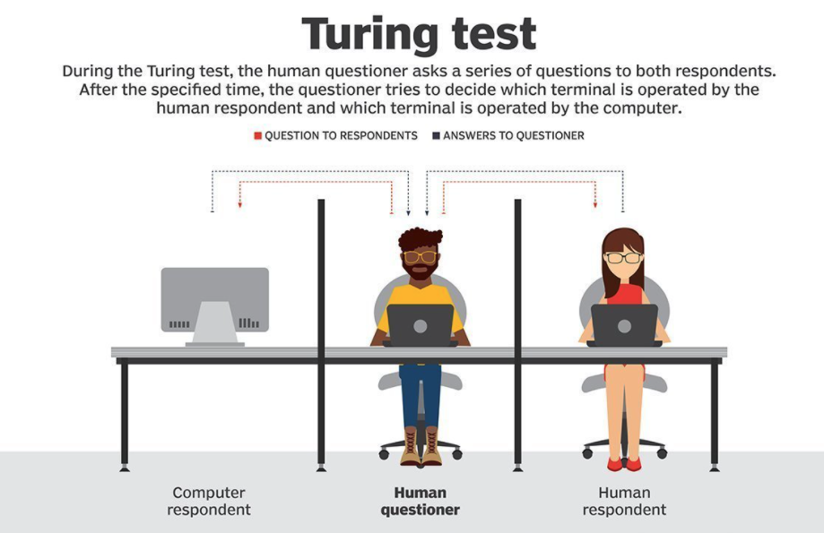

Lesson 1 - What is AI?
At the end of this lesson, you will be able to:
- Explain what artificial intelligence means in practical terms.
- Describe the "prediction and decision" framework for understanding AI.
- Explain the Turing test and why it matters historically.
You've Already Used AI Today
Before we talk about what artificial intelligence is, let's talk about what you've probably already done with it today—possibly without even thinking about it. Did you type a text message and let your phone finish a word for you? Did you open a maps app to check traffic? Did a streaming service suggest something to watch? Did your email quietly tuck a scam message into the spam folder before you ever saw it?
All of those are AI. Not the science-fiction kind—no glowing red eyes, no robot uprising. Just software that looked at a bunch of data, made a prediction about what you probably wanted (or didn't want), and acted on that prediction. That's the version of AI that actually exists in the world right now, and it's the version we're going to focus on in this unit.
So if AI isn't killer robots, what is it? That's a surprisingly tricky question, and people have been arguing about the answer for decades. Let's dig in.
What Do We Mean by "Artificial Intelligence"?
The term "artificial intelligence" was coined in 1956 by a computer scientist named John McCarthy, at a now-famous workshop at Dartmouth College. That's it—that's the whole origin story. A handful of researchers got together and said, basically, "let's figure out how to make machines think." The name stuck.
But what does it actually mean? It helps to break it down into its two words. "Artificial" just means made by humans—not found in nature. Easy enough. "Intelligence" is where things get interesting, because we don't even have a single agreed-upon definition of intelligence when it comes to people, let alone software. Can a program really be "intelligent"? Is it intelligent in the same way a person is? (Short answer: no. Longer answer: it's complicated, and we'll get into it more as the unit goes on.)
For our purposes, here's a useful way to think about AI: AI is software that uses data to make predictions about things it hasn't seen before, and then uses those predictions to make decisions or recommendations.
That's the core of it—prediction and decision. Two words. Let's look at some examples to make this concrete:
- Spam filter: Your email app has seen millions of emails that were marked as spam and millions that weren't. When a new email arrives, it uses patterns from that data to predict whether this new message is spam, and then it decides to put it in your inbox or your junk folder.
- Google Maps: The app collects speed data from thousands of phones on the road right now. It uses that data to predict how long different routes will take, and then it decides which route to recommend to you.
- Spotify recommendations: The service looks at what you've listened to, what people with similar taste have listened to, and patterns in the music itself. It predicts what you'll probably enjoy, and decides to put those songs in your Discover Weekly playlist.
Notice what's happening in every one of these examples. The software isn't following a simple script that a programmer wrote out step by step ("if the email contains the word 'prince,' mark it as spam"). Instead, it learned patterns from a huge pile of data and is applying those patterns to new situations it's never seen before. That's the key distinction. A regular program does exactly what it's told. An AI program generalizes from examples.
The Turing Test
Way back in 1950—before the term "artificial intelligence" even existed—a mathematician named Alan Turing asked a beautifully simple question: can machines think?
Rather than try to define "thinking" (a philosophical rabbit hole if there ever was one), Turing proposed a practical test. Here's how it works: you have a human questioner who can send text messages to two hidden respondents—one is a person and one is a computer. The questioner can ask them anything they want. After some period of chatting, the questioner has to guess which respondent is the human and which is the machine. If the computer can fool the questioner consistently, Turing argued, then for all practical purposes we should say it's exhibiting intelligent behavior.

Now, the Turing test isn't perfect—there are all sorts of philosophical objections to it, and you could argue that a program that's very good at sounding human isn't the same as one that's actually "thinking." Fair point! But as a historical landmark, the Turing test matters because it shifted the conversation from vague philosophical debates about machine consciousness to something more concrete: can the machine's behavior be distinguished from a human's?
Something to think about:
Have you ever been unsure whether you were chatting with a bot or a real person? Maybe in a customer service window, or on social media? What tipped you off—or didn't? Five years ago, most chatbots were pretty easy to spot. They'd give weird, canned responses or get confused by simple follow-up questions. But if you've used ChatGPT or a similar tool, you know the line has gotten a lot blurrier. Does that mean these programs have "passed" the Turing test? Or does it mean we need a better test?
AI Is Everywhere (But It's Not Magic)
At this point you might be thinking: "Okay, AI is predictions and decisions, it's in my phone, it can sort of sound like a person—so what's the big deal?" The big deal is that AI systems are now making predictions and decisions that really matter. They're helping doctors spot tumors in medical scans. They're filtering what news stories you see. They're being used to decide who gets a loan and who doesn't. The stakes are a lot higher than your Spotify playlist.
But here's something important to keep in mind as we go through this unit: AI is powerful, but it is not magic, and it is not conscious. These programs don't "understand" things the way you do. They don't have experiences, or feelings, or intentions. A spam filter doesn't know what spam is in any meaningful sense—it just knows that certain patterns of words tend to show up in messages that humans have flagged. When an AI makes a mistake (and they all do, regularly), it's not because it got confused or tired. It's because the patterns in its data didn't match the new situation well enough.
This unit is going to give you a clearer picture of how all of this works under the hood. We'll look at how AI systems learn from data (that's machine learning), explore the ethical questions that come with handing decisions over to software, talk about what's hype and what's real, and—yes—spend some time with large language models like ChatGPT, because it would be weird not to.
For now, the takeaway is this: AI is a set of techniques for making software that can learn from data and generalize to new situations. It's made by humans, it runs on computers, and it's already woven into your daily life whether you think about it or not. The goal of this unit is to make sure you do think about it—what it can do, what it can't do, and what it should do.
Let's get started.